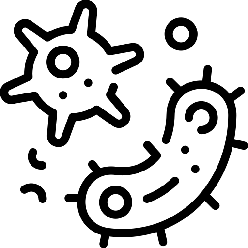

Importance of staying clean and washing Hands Regularly
Imagine your hands are like tiny playgrounds for invisible germs! They love to swing on your fingers and hide between your fingers, waiting for a chance to jump onto other surfaces and make you sick. But don't worry, you have a superpower that can stop them in their tracks: washing your hands!

Think of soap as a superhero shield that traps and washes away those icky germs. Just like a superhero wouldn't let villains take over the city, you don't want germs taking over your body. So, how do you use this amazing power?
First, wet your hands with clean water, any temperature will do. Then, grab your soap hero and rub it all over your hands, making sure to get between your fingers, under your nails, and even on your thumbs! Sing your favorite song for 20 seconds (about the time it takes to hum "Happy Birthday" twice) to make sure the soap gets everywhere. Finally, rinse your hands with clean water and dry them with a towel. Tada! You've just defeated the germ villains and protected yourself from getting sick!
Remember, washing your hands is super important after using the bathroom, before eating, after playing outside, and whenever your hands feel dirty. By using your hand-washing superpower regularly, you can stay healthy and keep those pesky germs away!
How germs enter your body?
• Touching your eyes, nose, and mouth with unwashed hands
• Preparing or eating food and drinks with unwashed hands
• Touching surfaces or objects that have germs on them
• Blowing your nose, cough, or sneeze into hands and then touch other people’s hands or common objects
Washing hands helps one to avoid cross contamination. Hands can be cleaned using soaps, sanitisers etc.,
Video Resources